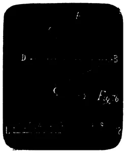
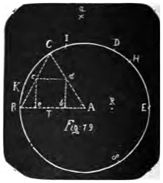
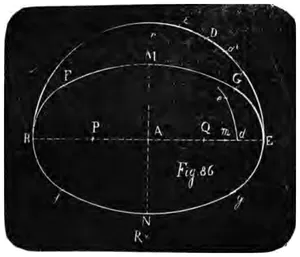
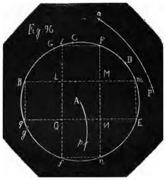

Book XI: Miscellaneous Problems & Platonic Solids¶
Libro Undecimo: Problemi varj (§§ 151–192)
Mascheroni’s virtuoso gallery of advanced compass constructions (§§ 151–192, pp. 86–119, folios 0111–0144): compass proofs of trigonometric addition formulas (§§ 151–160), inscribed squares and octagon scaling (§§ 161–169), four-center ovals (§§ 170–179), the Kepler golden right triangle and all five Platonic solid circumradii (§§ 180–185), and symmetric five-square and seven-hexagon circle packings (§§ 186–192).

§§ 151–160: Compass Proofs of Trigonometric Identities
BOOK ELEVENTH — VARIOUS PROBLEMS

§§ 161–169: Inscribed Squares, Octagons & Area Scaling
161. Problem. In a given equilateral triangle \(ABC\) (fig. 79), to inscribe a square \(becd\) (§ 124).

§§ 170–179: Four-Center Ovals, Tangents & Architectural Arches
170. Problem. With center \(A\) (Fig. 84), to describe a circle that touches the four circles last inscribed (§ 169) in a given circle.
§§ 180–185: Kepler Triangle & Platonic Solid Circumradii
180. Problem. To describe (Fig. 90) a right triangle whose sides stand in arithmetic progression.

§§ 186–192: Five-Square Cross & Seven-Hexagon Flower
186. Problem. In a circle (Fig. 96) of given radius \(AB\), to inscribe five equal squares, of which one is concentric with the circle and the others touch it, each having one side in common with the central square.